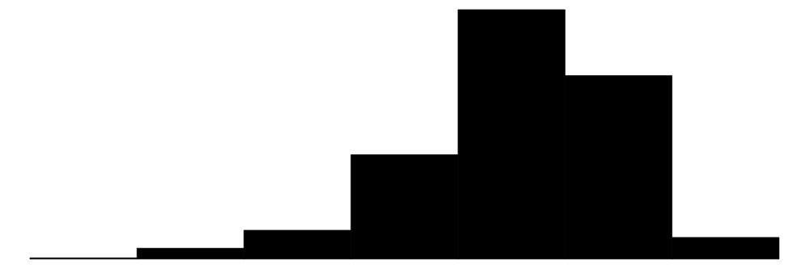
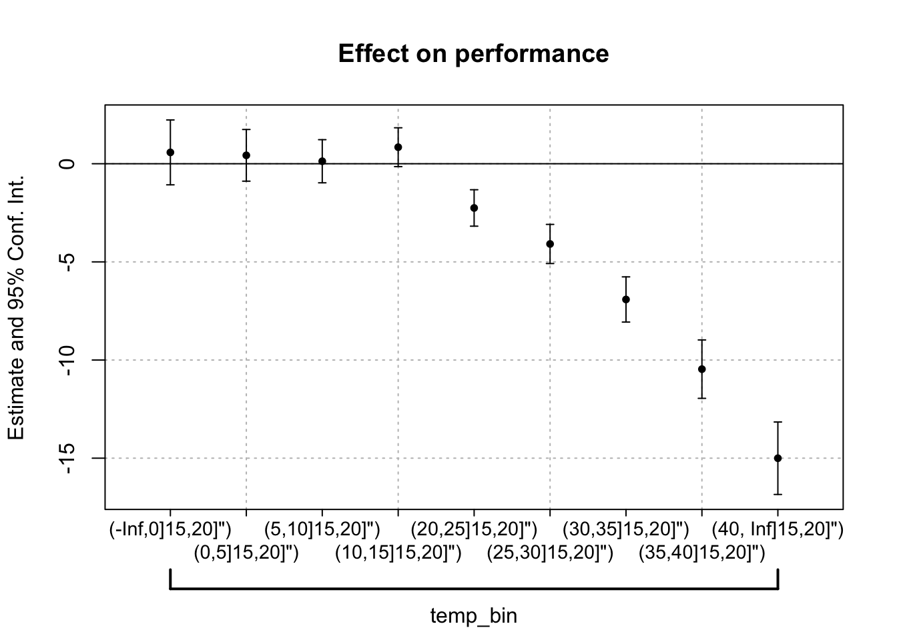
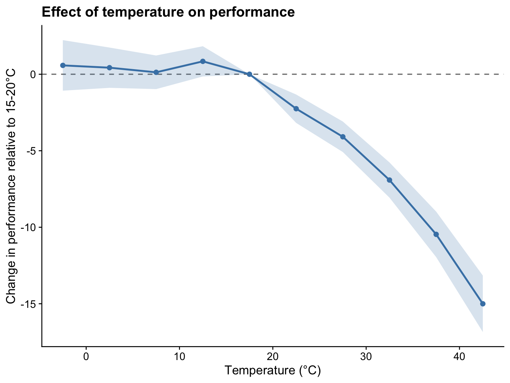

pacman::p_load(tidyverse, fixest, cowplot, modelsummary)
theme_set(theme_cowplot())
set.seed(42)I work a lot with binned regressions, i.e., regressions that estimate the effect of a variable that has been discretized into bins. This is common in applied microeconomics, where researchers often want to estimate the effect of a continuous variable (e.g., temperature, income, distance) on an outcome while allowing for nonlinearities by binning the variable. The canonical estimating equation here is something like:
\[y_i = \sum_{b=1}^{B} \beta_b \text{1}[x_i \in \text{bin } b] + \varepsilon_i\]
where \(y_i\) is the outcome, \(x_i\) is the continuous independent variable that has been binned into \(B\) bins, and \(\varepsilon_i\) is the error term.
Anyway, I’ve found myself writing the same code over and over to estimate models using a binned independent variable and then to plot those estimates. To save my future self some time, this post documents a general workflow for estimating, extracting, and plotting coefficient estimates from binned models.
Setup
We’ll use the excellent fixest for estimation and the tidyverse for data manipulation and plotting.
Generate fake data
Let’s create some fake data where the outcome has a nonlinear relationship with temperature. I’ll generate data that shows “performance” (e.g., productivity or athletic performance) declining at high temperatures.
n <- 500
data <- tibble(
id = 1:n,
group = sample(LETTERS[1:10], n, replace = TRUE),
temperature = rnorm(n, mean = 20, sd = 10),
noise = rnorm(n, 0, 3)
) %>%
mutate(
# Create a nonlinear effect: small effect until temp > 15, then larger negative effect
performance = 100 - 0.1 * pmax(temperature - 15, 0)^1.5 + noise,
# Bin the temperature variable
temp_bin = cut(temperature, breaks = c(-Inf, seq(0, 40, 5), Inf))
)
datasummary_skim(data = data)| Unique | Missing Pct. | Mean | SD | Min | Median | Max | Histogram | |
|---|---|---|---|---|---|---|---|---|
| id | 500 | 0 | 250.5 | 144.5 | 1.0 | 250.5 | 500.0 |  |
| temperature | 500 | 0 | 19.4 | 10.7 | -9.6 | 19.4 | 52.0 |  |
| noise | 500 | 0 | 0.3 | 3.1 | -7.6 | 0.4 | 9.4 |  |
| performance | 500 | 0 | 97.6 | 4.8 | 78.7 | 98.0 | 107.2 |  |
| N | % | |||||||
| group | A | 51 | 10.2 | |||||
| B | 50 | 10.0 | ||||||
| C | 42 | 8.4 | ||||||
| D | 46 | 9.2 | ||||||
| E | 51 | 10.2 | ||||||
| F | 55 | 11.0 | ||||||
| G | 44 | 8.8 | ||||||
| H | 40 | 8.0 | ||||||
| I | 51 | 10.2 | ||||||
| J | 70 | 14.0 | ||||||
| temp_bin | (-Inf,0] | 17 | 3.4 | |||||
| (0,5] | 30 | 6.0 | ||||||
| (5,10] | 51 | 10.2 | ||||||
| (10,15] | 72 | 14.4 | ||||||
| (15,20] | 85 | 17.0 | ||||||
| (20,25] | 94 | 18.8 | ||||||
| (25,30] | 72 | 14.4 | ||||||
| (30,35] | 44 | 8.8 | ||||||
| (35,40] | 22 | 4.4 | ||||||
| (40, Inf] | 13 | 2.6 |
Estimate the model
We’ll estimate a simple model with binned temperature and group fixed effects. The reference category is the bin containing temperatures around 15-20°C (where we expect performance to be close to baseline).
fit <- feols(performance ~ i(temp_bin, ref = "(15,20]") | group, data = data)
etable(fit) fit
Dependent Var.: performance
temp_bin = (-Inf,0]15,20]") 0.5785 (0.8412)
temp_bin = (0,5]15,20]") 0.4285 (0.6700)
temp_bin = (5,10]15,20]") 0.1270 (0.5590)
temp_bin = (10,15]15,20]") 0.8427. (0.5032)
temp_bin = (20,25]15,20]") -2.253*** (0.4723)
temp_bin = (25,30]15,20]") -4.087*** (0.5074)
temp_bin = (30,35]15,20]") -6.915*** (0.5860)
temp_bin = (35,40]15,20]") -10.46*** (0.7569)
temp_bin = (40,Inf]15,20]") -15.00*** (0.9396)
Fixed-Effects: ------------------
group Yes
___________________________ __________________
S.E. type IID
Observations 500
R2 0.58630
Within R2 0.57832
---
Signif. codes: 0 '***' 0.001 '**' 0.01 '*' 0.05 '.' 0.1 ' ' 1Extract and clean coefficients
Now we can extract the coefficients. We do that by saving the output of coefplot, which gives us a tidy data frame of estimates in the prms object. Note that calling coefplot yields a pretty good plot by default! So you may want to stop here if you’re just doing a quick visualization.
# Get coefficient estimates with confidence intervals
coef_df <- coefplot(fit, keep = "temp_bin")$prms
Assuming we do want to customize the plot further, we can now extract the bin limits and calculate midpoints for plotting.I wrote a helper function that parses the bin names and extracts the lower and upper bounds. It also (optionall) corrects infinite bounds to finite values based on the bin width.
Finally, the body of the code itself also includes the addition of the reference category (which has an estimate of 0 by definition) and arranges the data frame by bin midpoints.
extract_limits_from_bin_names <- function(x, fix_Inf = TRUE) {
# Extract intervals from coefficient names like "temp_bin::(0,5]"
intervals_chr <- str_extract(x, "\\(([^,]+),([^\\]]+)\\]")
# Parse the lower and upper bounds
intervals <- str_match(intervals_chr, "\\(([^,]+),([^\\]]+)\\]")
intervals_df <- data.frame(
bin_low = as.numeric(intervals[, 2]),
bin_high = as.numeric(intervals[, 3])
)
# Replace infinite bounds with finite values based on bin width
if (fix_Inf) {
bin_size <- intervals_df$bin_high - intervals_df$bin_low
bin_size <- min(bin_size[is.finite(bin_size)])
intervals_df <- intervals_df %>%
mutate(
bin_low = if_else(is.infinite(bin_low), bin_high - bin_size, bin_low),
bin_high = if_else(is.infinite(bin_high), bin_low + bin_size, bin_high)
)
}
return(intervals_df)
}
# Extract bin limits and calculate midpoints
coef_df <- coef_df %>%
bind_cols(extract_limits_from_bin_names(coef_df$estimate_names)) %>%
mutate(bin_mid = (bin_low + bin_high) / 2)
# Add the reference category (estimate = 0)
ref_df <- tibble(
estimate_names = "(15,20]",
estimate = 0,
ci_low = 0,
ci_high = 0,
bin_low = 15,
bin_high = 20,
bin_mid = 17.5
)
coef_df <- bind_rows(coef_df, ref_df) %>%
arrange(bin_mid)
glimpse(coef_df)Rows: 10
Columns: 11
$ estimate <dbl> 0.5785088, 0.4284605, 0.1269886, 0.8427303, 0.00000…
$ ci_low <dbl> -1.0742853, -0.8879347, -0.9714904, -0.1460390, 0.0…
$ ci_high <dbl> 2.231303, 1.744856, 1.225468, 1.831500, 0.000000, -…
$ estimate_names <chr> "temp_bin::(-Inf,0]15,20]\")", "temp_bin::(0,5]15,2…
$ estimate_names_raw <chr> "temp_bin::(-Inf,0]15,20]\")", "temp_bin::(0,5]15,2…
$ id <dbl> 1, 1, 1, 1, NA, 1, 1, 1, 1, 1
$ x <dbl> 1, 2, 3, 4, NA, 5, 6, 7, 8, 9
$ y <dbl> 0.5785088, 0.4284605, 0.1269886, 0.8427303, NA, -2.…
$ bin_low <dbl> -5, 0, 5, 10, 15, 20, 25, 30, 35, 40
$ bin_high <dbl> 0, 5, 10, 15, 20, 25, 30, 35, 40, 45
$ bin_mid <dbl> -2.5, 2.5, 7.5, 12.5, 17.5, 22.5, 27.5, 32.5, 37.5,…Plot the results
ggplot(coef_df, aes(x = bin_mid, y = estimate)) +
geom_hline(yintercept = 0, linetype = "dashed", color = "gray50") +
geom_ribbon(aes(ymin = ci_low, ymax = ci_high), alpha = 0.2, fill = "steelblue") +
geom_line(color = "steelblue", linewidth = 1) +
geom_point(color = "steelblue", size = 2) +
labs(
x = "Temperature (°C)",
y = "Change in performance relative to 15-20°C",
title = "Effect of temperature on performance"
) +
theme_cowplot()
The plot clearly shows the nonlinear effect we built into the data: performance is relatively stable at cooler temperatures but declines sharply once temperatures exceed about 20°C.
Wrapping up
This workflow is handy whenever you’re working with binned variables and want to visualize the estimates. The key steps are:
- Create bins using
cut() - Estimate the model with
i()syntax infixest - Extract coefficients using
coefplot() - Parse bin limits from coefficient names
- Add the reference category manually
- Plot using
ggplot2
The extract_limits_from_bin_names() function does the heavy lifting of parsing the interval notation, which saves you from manually typing out bin midpoints or limits.